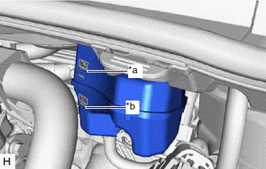
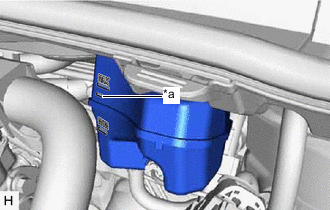

CAUTION / NOTICE / HINT
Note
If using a dropper to adjust the fluid amount, make sure that the dropper has not been used with mineral oils, water or deteriorated brake fluid. Sealed areas may deteriorate and lead to fluid leaks, or the fluid may deteriorate and lead to decreased efficiency.
Tech Tips
If the brake fluid level is lower than the MIN line, inspect for brake fluid leaks and brake pad wear. After repair or replacement, adjust the brake fluid level in the reservoir as specified below.
PROCEDURE
INSPECT AND ADJUST FLUID LEVEL IN RESERVOIR (When Using the GTS)
Connect the GTS to the DLC3 with the power switch off.
Check that park (P) is selected and the parking brake is applied, and turn the power switch on (IG).
Turn the GTS on and enter the following menus: Chassis / ABS/VSC/TRC / Utility / ECB (Electronically Controlled Brake system) Utility / Zero Down.
| Tester Display |
|---|
| ECB Utility |
Select "Next" and wait for 10 seconds.

| *a | MAX Line |
| *b | MIN Line |
After the booster pump stopped, inspect the fluid level is between the MAX and MIN lines. If necessary, add the brake fluid up to the MAX line.
| Brake Fluid |
|---|
| SAE J1703 or FMVSS No. 116 DOT3 |
| SAE J1704 or FMVSS No. 116 DOT4 |
INSPECT AND ADJUST FLUID LEVEL IN RESERVOIR (When Not Using the GTS)

| *a | Fluid Level Support Line |
Inspect the fluid level is above the MIN line with the power switch on (IG). If necessary, add the brake fluid up to the fluid level support line with the power switch on (IG).
| Brake Fluid |
|---|
| SAE J1703 or FMVSS No. 116 DOT3 |
| SAE J1704 or FMVSS No. 116 DOT4 |